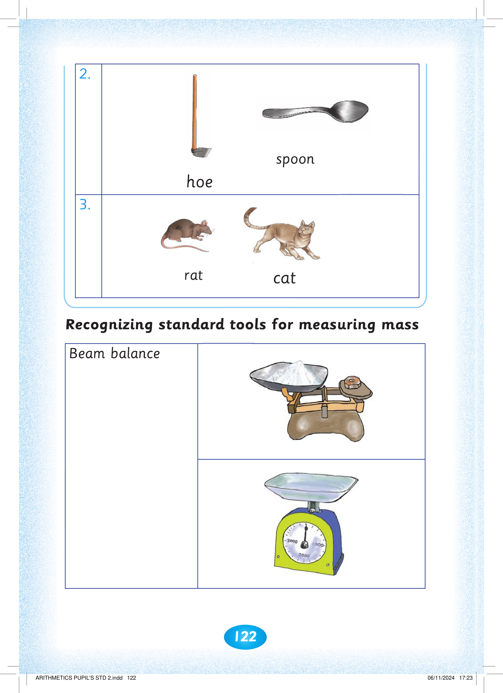
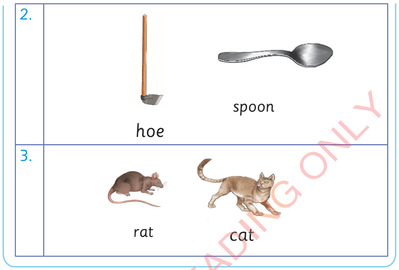

122



Exercise 6 continues. 2. A hoe and a spoon are shown. 3. A rat and a cat are shown. Recognizing standard tools for measuring mass. The pictures show a beam balance with a pan and a standard weight, and a dial weighing scale with a tray on top.
hoe
spoon
3.
rat
cat
Recognizing standard tools for measuring mass
Beam balance


ARITHMETICS PUPIL'S STD 2.indd 122
06/11/2024 17:23